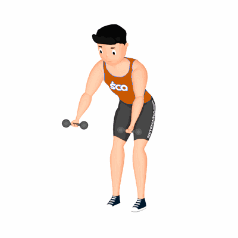

Remada Curvada Supinada com Halter

Esse exercício é caracterizado por ser um movimento composto que trabalha principalmente o fortalecimento e hipertrofia da região dorsal.
Ficha Técnica
Tipo: Musculação
Grupo Muscular: Costas
Aparelho: Nenhum
Músculos: Nenhum
Como realizar
- Fique em pé com os pés alinhados à largura dos ombros. Segure os halteres com uma pegada supinada e as mãos levemente mais abertas do que a largura dos ombros;
- Deixe os halteres pendurados a partir dos ombros. Mantendo a coluna lombar naturalmente arqueada e os ombros para trás, curve os quadris e joelhos e abaixe o tronco até que fique quase paralelo ao chão;
- Sem mover o tronco, puxe a barra para baixo até os abdominais superiores;
- Mantenha os cotovelos fixos às laterais do corpo e contraia as escápulas uma contra a outra;
- Pause e depois retorne lentamente à posição inicial.
 RC STORE
RC STORE